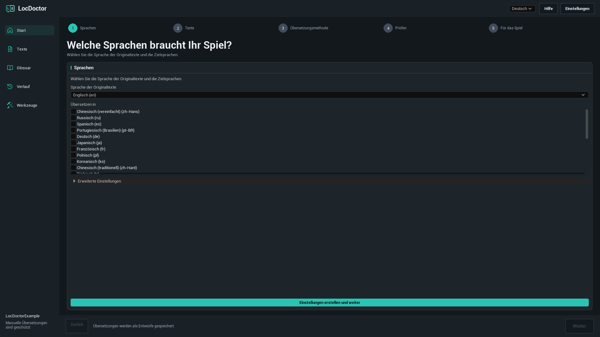
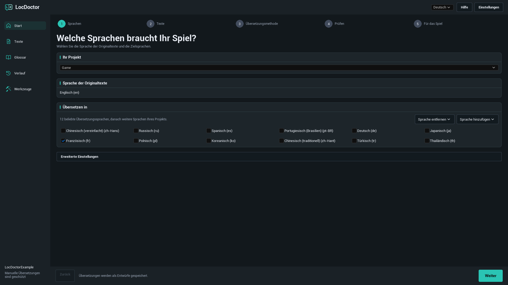
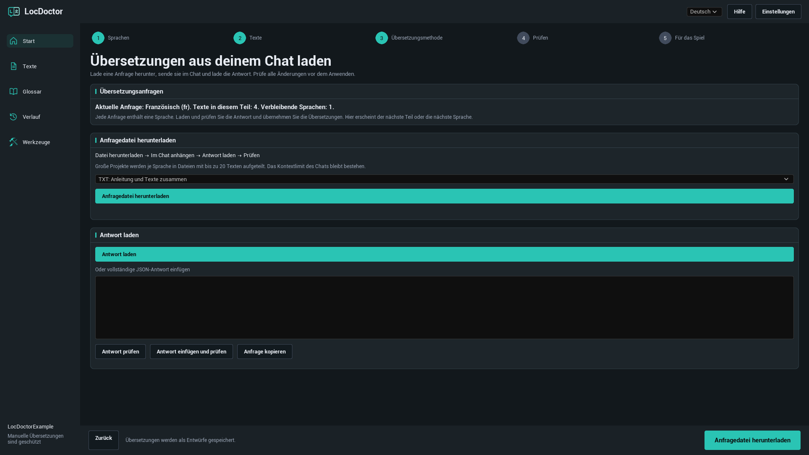
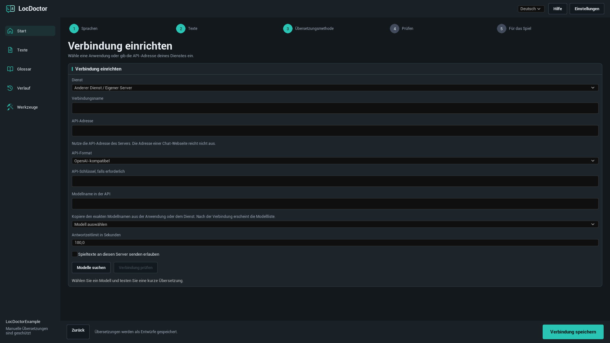
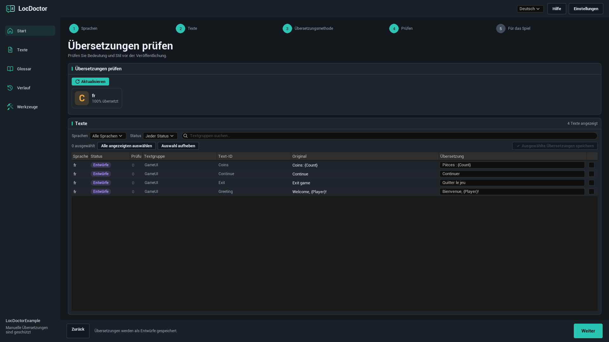
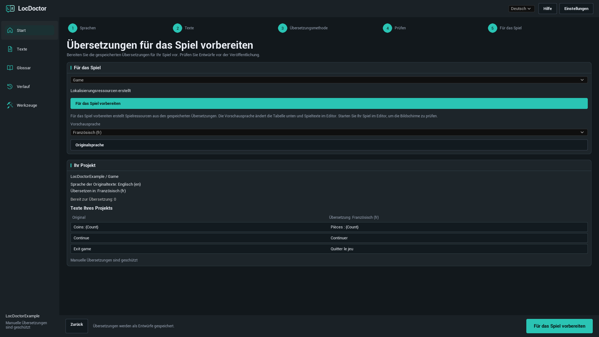

BENUTZERANLEITUNG FÜR LOCDOCTOR 1.0.0
Übersetzen Sie Ihr Spiel.
Behalten Sie jedes Wort im Blick.
Übersetzen Sie Spieltexte in Unreal Engine mit einem lokalen Modell, Ihrem KI-Chat oder einem API-Dienst. Prüfen Sie die Ergebnisse im Editor und bereiten Sie sie für Ihr Spiel vor.
Wählen Sie die Methode, die Ihnen bereits zur Verfügung steht
Auf meinem Computer
Verwenden Sie ein installiertes lokales Textmodell.
Ollama, LM Studio, Jan, GPT4AllIn meinem Chat
Senden Sie eine Anfragedatei in Ihrem eigenen Chat.
Kein API-Schlüssel erforderlichÜber eine API
Lassen Sie Texte automatisch über einen Dienst übersetzen.
API-Schlüssel erforderlich, sofern der Dienst ihn verlangtERSTE SCHRITTE
Installation
LocDoctor 1.0.0 unterstützt Unreal Engine 5.7 und 5.8 unter Windows mit 64 Bit. Verwenden Sie das Paket für Ihre Engine-Version.
Über Fab installieren
Installieren Sie das Plugin für Ihre Engine-Version aus der Fab-Bibliothek im Epic Games Launcher. Öffnen Sie Ihr Projekt, aktivieren Sie bei Bedarf LocDoctor unter Edit > Plugins und starten Sie den Editor neu.
Aus einer ZIP-Datei installieren
- Schließen Sie Unreal Editor.
- Entpacken Sie das Paket so, dass
LocDoctor.uplugindirekt in<YourProject>/Plugins/LocDoctor/liegt. Enthält die ZIP-Datei bereits einen OrdnerLocDoctor, legen Sie diesen in den OrdnerPlugins. - Öffnen Sie das Projekt. Aktivieren Sie bei Bedarf LocDoctor unter Edit > Plugins und starten Sie den Editor neu.
- Öffnen Sie Tools > LocDoctor.
YourProject/
YourProject.uproject
Plugins/
LocDoctor/
LocDoctor.uplugin
Resources/
Source/Ein Paket mit kompilierten Dateien enthält auch einen Ordner Binaries. Bei einem Paket, das nur Quellcode enthält, benötigt Unreal geeignete C++-Buildwerkzeuge, um die Editor-Module zu erstellen.
ERSTE SCHRITTE
Ihre erste Übersetzung
Beginnen Sie mit einer Sprache und wenigen Spieltexten. Die Bezeichnungen der Plugin-Schaltflächen entsprechen der Sprache dieser Anleitung. Die Menünamen von Unreal Editor selbst sind auf Englisch angegeben.
- Wählen Sie Ihre Sprachen. Öffnen Sie Tools > LocDoctor. Wählen Sie die Sprache Ihrer ursprünglichen Spieltexte und mindestens eine Zielsprache. Klicken Sie beim ersten Start auf Einstellungen erstellen und weiter. Lassen Sie die erweiterten Einstellungen unverändert, sofern Ihr Projekt keinen anderen Asset-Ordner oder ein anderes Lokalisierungsziel benötigt.
- Erfassen Sie Ihre Texte. Klicken Sie im Schritt Texte auf Texte erfassen. Speichern Sie geänderte Spiel-Assets, wenn Unreal Sie dazu auffordert. Prüfen Sie, ob die Projektübersicht die erwarteten Texte enthält.
- Wählen Sie eine Übersetzungsmethode. Verwenden Sie Auf meinem Computer, In meinem Chat oder Über eine API. Wählen Sie für automatische Übersetzungen ein Modell und klicken Sie auf Verbindung prüfen. Dabei wird ein kurzer Text probeweise übersetzt. Nach erfolgreicher Prüfung wird die Hauptschaltfläche zu Texte übersetzen.
- Prüfen Sie das Ergebnis. KI-Übersetzungen werden als Entwürfe gespeichert. Lesen Sie im Schritt Prüfen jede Übersetzung, korrigieren Sie sie bei Bedarf und speichern Sie die ausgewählten Zeilen.
- Bereiten Sie das Spiel vor. Klicken Sie unter Für das Spiel auf Für das Spiel vorbereiten. Testen Sie das Spiel in jeder Sprache und nehmen Sie diese Sprachen in die Verpackungseinstellungen auf.

Sprachen und Spieltexte
Ausgangssprache, Zielsprachen und Sprache der Oberfläche
- Sprache der Originaltexte: die Sprache, in der die ursprünglichen Spieltexte geschrieben sind.
- Übersetzen in: die Sprachen des aktuellen Übersetzungsauftrags. Entfernen Sie das Häkchen, um eine Sprache aus diesem Auftrag auszuschließen.
- Oberflächensprache: die Auswahl oben in LocDoctor. Sie ändert nur die Plugin-Oberfläche. Englisch ist voreingestellt.
Ein Lokalisierungsziel, meist Game genannt, enthält die Unreal-Lokalisierungseinstellungen für eine Gruppe von Texten. Wählen Sie bei mehreren Zielen das gewünschte aus.
Eine Sprache hinzufügen oder entfernen

Zuerst werden 12 beliebte Zielsprachen vorgeschlagen. Mit Sprache hinzufügen suchen Sie weitere Sprachen nach Name oder Unreal-Kulturcode. Sprache entfernen entfernt eine Sprache aus der Konfiguration des Lokalisierungsziels. Gespeicherte Übersetzungsdateien bleiben erhalten, sodass Sie die Sprache später wieder hinzufügen können.
Welche Texte lassen sich übersetzen?
LocDoctor arbeitet mit lokalisierbaren FText-Werten und String Tables, die das Lokalisierungssystem von Unreal erfasst. Gewöhnliche FString-Werte und als culture invariant markierte Texte sind nicht automatisch lokalisierbar. Unter Werkzeuge > Projektprüfung können Sie nach solchen Fällen suchen.
ÜBERSETZUNGSMETHODEN
Auf meinem Computer
Verwenden Sie ein heruntergeladenes Textmodell in einer Anwendung auf Ihrem Computer. LocDoctor verbindet sich mit dem API-Server dieser Anwendung. Das Plugin installiert keine Anwendungen und lädt keine Modelle herunter.
- Installieren Sie die gewünschte Modellanwendung. Laden Sie ein Modell zur Texterzeugung herunter, für das Ihr Computer genügend Speicher hat und das Ihre Zielsprachen unterstützt.
- Starten Sie die Anwendung und aktivieren Sie ihren lokalen API-Server. Lassen Sie sie während der Übersetzung geöffnet.
- Wählen Sie in LocDoctor Auf meinem Computer und anschließend Modell auswählen. Mit Modelle suchen aktualisieren Sie die Liste.
- Wählen Sie ein Modell. Falls noch keine Prüfung läuft, klicken Sie auf Verbindung prüfen und warten Sie auf die kurze Testübersetzung.
- Sobald die Verbindung bereit ist, klicken Sie auf Texte übersetzen.
Lokale Anwendung einrichten
| Anwendung | Was Sie starten müssen | Standard-API-Adresse |
|---|---|---|
| Ollama | Öffnen Sie Ollama mit einem heruntergeladenen lokalen Textmodell. Der lokale Server startet normalerweise mit der Anwendung. | http://127.0.0.1:11434 |
| LM Studio | Öffnen Sie Developer und starten Sie den API-Server. Stellen Sie diesem Server ein Textmodell zur Verfügung. | http://127.0.0.1:1234/v1 |
| Jan | Öffnen Sie Settings > Local API Server und starten Sie den Server. Falls er einen Schlüssel verlangt, tragen Sie denselben Schlüssel in LocDoctor ein. | http://127.0.0.1:1337/v1LocDoctor prüft auch Port 6767. |
| GPT4All | Öffnen Sie Settings > Application > Advanced und aktivieren Sie Local API Server. Laden Sie ein Textmodell. | http://127.0.0.1:4891/v1 |
Wenn Sie den Port geändert haben, verwenden Sie die Adresse aus Ihrer Anwendung. LocDoctor fragt die Modelllisten lokaler Server ab und prüft auch gespeicherte lokale Verbindungen. Eine Suche auf Ihren Datenträgern oder die Angabe des Installationsordners ist nicht nötig.
Offizielle Anleitungen: OllamaLM StudioJanGPT4All
Andere Anwendung oder eigener Port
Wählen Sie in den Verbindungseinstellungen Andere Anwendung oder Anderer Dienst / Eigener Server. Tragen Sie die API-Adresse ein, wählen Sie als API-Format Ollama oder OpenAI-kompatibel und geben Sie den genauen Modellnamen an. Server wie llama.cpp, LocalAI und vLLM können funktionieren, wenn ihr Endpunkt das gewählte Format unterstützt.
ÜBERSETZUNGSMETHODEN
In meinem Chat
Verwenden Sie einen KI-Chat, der eingefügten Text oder Dateianhänge annimmt. Sie senden die Anfrage selbst und übertragen die Antwort anschließend in LocDoctor. Für diese Methode ist kein API-Schlüssel erforderlich.
- Wählen Sie In meinem Chat. Unter Aktuelle Anfrage oder Erste Anfrage sehen Sie, welche Sprache und welchen Teil Sie gerade bearbeiten.
- Klicken Sie auf Anfragedatei herunterladen. Wählen Sie beim ersten Versuch TXT: Anleitung und Texte zusammen.
- Hängen Sie die Datei in Ihrem KI-Chat an. Bitten Sie den Chat, die enthaltenen Anweisungen zu befolgen und die vollständige angeforderte Übersetzungsantwort zurückzugeben.
- Klicken Sie auf Antwort laden, um die Antwortdatei zu importieren. Alternativ fügen Sie die vollständige JSON-Antwort in das Antwortfeld ein und klicken auf Antwort prüfen, oder verwenden Sie Antwort einfügen und prüfen.
- Lesen Sie die Vorschau. Wenn alle Prüfungen erfolgreich sind, klicken Sie auf Übersetzungen anwenden. Die Übersetzungen werden als Entwürfe gespeichert.
- Laden Sie die nächste Anfrage herunter oder kopieren Sie sie. Wiederholen Sie den Ablauf, bis keine Anfragen mehr ausstehen. Prüfen Sie anschließend die Übersetzungen.
Welches Dateiformat soll ich verwenden?

| Format | Geeignet für | Was Sie anhängen |
|---|---|---|
| TXT | Den einfachen ersten Versuch. | Eine Datei mit Anweisungen und Texten. |
| JSON | Einen Chat oder ein Werkzeug, das gut mit strukturierten Daten arbeitet. | Die JSON-Anfrage einschließlich ihrer Anweisungen. |
| CSV | Eine Tabelle, die Sie ansehen oder weitergeben möchten. | Die CSV-Datei und die separate Datei mit Anweisungen. |
Antwortdateien können JSON, TXT mit der vollständigen JSON-Antwort oder CSV mit den Spalten batch, culture, i und t sein. Verwenden Sie Anfrage kopieren, wenn Ihr Chat keine Anhänge annimmt. Eine Datei hebt die Kontext- und Uploadgrenzen des Chats nicht auf.
Was wird beim Prüfen einer Antwort kontrolliert?
LocDoctor prüft die Anfragekennung, Sprache, Textkennungen und Formatierungsplatzhalter. Jeder angeforderte Eintrag muss genau einmal enthalten sein. Spieltexte und Glossar müssen noch zur exportierten Anfrage passen.
Wenn Sie nach dem Export Ausgangstexte, Übersetzungen oder das Glossar geändert haben, erstellen Sie eine neue Anfrage. Ist die Antwort unvollständig oder verändert sie einen Platzhalter, bitten Sie den Chat um eine Korrektur. Die aktive Anfrage wird lokal im Projekt gespeichert, sodass Sie nach einem Neustart des Editors fortfahren können.
ÜBERSETZUNGSMETHODEN
Über eine API
LocDoctor sendet Übersetzungsanfragen automatisch an den eingerichteten Dienst. Erstellen Sie einen API-Schlüssel im Benutzerkonto dieses Dienstes und prüfen Sie vorab die Modellverfügbarkeit und Abrechnung.
- Wählen Sie Über eine API. Wählen Sie eine Dienstvorlage, etwa OpenRouter, OpenAI, Google Gemini oder Groq.
- Öffnen Sie Erweiterte Einstellungen. Tragen Sie Ihren API-Schlüssel, falls erforderlich ein. Wählen Sie für einen eigenen Dienst Anderer Dienst / Eigener Server und geben Sie die vom Dienst dokumentierte API-Adresse und das Format an.
- Klicken Sie auf Modelle suchen und wählen Sie ein Modell. Falls der Dienst keine Modellliste anbietet, geben Sie den genauen Modellname in der API ein.
- Aktivieren Sie für einen Server außerhalb dieses Computers Spieltexte an diesen Server senden erlauben.
- Klicken Sie auf Verbindung prüfen und warten Sie auf die kurze Testübersetzung. Klicken Sie nach erfolgreicher Prüfung auf Texte übersetzen.
Verbindung mit einem eigenen Dienst

| Feld | Ihre Eingabe |
|---|---|
| Name der Verbindung | Ein verständlicher Name, etwa Übersetzungsserver des Teams. |
| API-Adresse | Die dokumentierte API-Basisadresse, zum Beispiel https://openrouter.ai/api/v1. Die URL einer Chat-Webseite funktioniert hier nicht. |
| API-Format | OpenAI-kompatibel für einen kompatiblen Chat-Completions-Endpunkt oder Ollama für einen Ollama-Endpunkt. Nicht unterstützte API-Formate benötigen eine gesonderte Integration. |
| API-Schlüssel | Der vom Dienst oder Server ausgestellte Schlüssel, falls erforderlich. |
| Modellname in der API | Die genaue vom Server erwartete Kennung. Der Anzeigename auf einer Webseite kann davon abweichen. |
| Antwortzeitlimit in Sekunden | Ein Wert zwischen 1 und 600. Erhöhen Sie ihn bei einem langsamen Modell oder Server. |
API-Schlüssel werden in den lokalen Benutzereinstellungen im Ordner Saved/Config des Projekts gespeichert. Diese Einstellungen sind nicht verschlüsselt. Schlüssel sind nicht in den Chat-Anfragedateien, im Übersetzungsverlauf oder in den Berichten von LocDoctor enthalten.
PRÜFEN UND VERÖFFENTLICHEN
Übersetzungen prüfen
KI-Übersetzungen beginnen als Entwürfe. Automatische Prüfungen helfen, die Formatierung zu erhalten. Bedeutung, Ton und Kontext müssen Sie dennoch selbst prüfen.
- Öffnen Sie den Schritt Prüfen oder die Seite Texte. Klicken Sie bei Bedarf auf Aktualisieren.
- Grenzen Sie die Liste mit den Filtern für Sprache und Status ein. Die geführte Prüfung zeigt Ihre ausgewählten Zielsprachen.
- Vergleichen Sie Original und Übersetzung. Korrigieren Sie bei Bedarf das Übersetzungsfeld. Prüfen Sie Namen, Begriffe, Platzhalter, Zeilenumbrüche und gemeldete Probleme.
- Wählen Sie die zu speichernden Zeilen aus und klicken Sie auf Ausgewählte Übersetzungen speichern.
- Prüfen Sie vor der Veröffentlichung die übersetzten Spielbildschirme.
| Status | Bedeutung |
|---|---|
| Unübersetzt | Für diesen Text und diese Sprache ist keine Übersetzung gespeichert. |
| Entwürfe | Eine KI-Übersetzung ist gespeichert und muss geprüft werden. |
| Geprüft | Die Übersetzung wurde als geprüft markiert. |
| Manuelle Übersetzung | Eine menschliche Übersetzung ist vor dem gewöhnlichen automatischen Ersetzen geschützt. |
| Veraltete Übersetzungen | Der Ausgangstext wurde seit der Übersetzung geändert. Vergleichen Sie die Übersetzung mit dem aktuellen Text. |
Die Fortschrittsanzeige verstehen

Der Fortschritt zählt Kombinationen aus Text und Sprache. Ein Ausgangstext in vier Zielsprachen ergibt vier Übersetzungsaufgaben. Bearbeitet zeigt die Anzahl bearbeiteter Aufgaben. Prüfen Sie die gespeicherten Ergebnisse und Fehlermeldungen, um festzustellen, welche Aufgaben erfolgreich waren.
Wenn Sie eine automatische Übersetzung stoppen, bleiben abgeschlossene Ergebnisse erhalten. Nicht abgeschlossene Arbeit lässt sich fortsetzen, sofern ein gespeicherter Auftrag verfügbar ist. Vorhandene menschliche Übersetzungen werden bei gewöhnlichen automatischen Aufträgen geschützt.
Formatierungsplatzhalter
Erhalten Sie Variablen wie {Player} und {Count}, Rich-Text-Tags und Zeilenumbrüche. Chat-Anfragen können Formatierung durch geschützte Token wie ⟦LD0⟧ ersetzen. Das Modell muss diese exakt übernehmen. Beim Anwenden einer gültigen Antwort stellt LocDoctor die ursprüngliche Formatierung wieder her.
Komplexe Ausdrücke für Mehrzahl und Geschlecht müssen manuell geprüft werden. Übersetzen Sie den Text in jedem Zweig, ohne die Struktur des Ausdrucks zu verändern.
Glossar und Verlauf
Begriffe einheitlich verwenden
- Öffnen Sie Glossar und klicken Sie auf Hinzufügen.
- Geben Sie einen Begriff ein. Wählen Sie Nicht übersetzen für einen Namen, der unverändert bleiben soll, oder Verbindliche Übersetzung für eine festgelegte Übersetzung.
- Legen Sie die Übersetzungen für die gewünschten Sprachen fest. Aktivieren Sie gegebenenfalls die Unterscheidung von Groß- und Kleinschreibung.
- Klicken Sie vor neuen Anfragen auf Speichern.
So können Sie beispielsweise einen Charakternamen unverändert lassen oder einen Spielbegriff in jeder Sprache einheitlich übersetzen. Das Glossar wird in neue Übersetzungsanfragen aufgenommen. Änderungen daran können eine bereits exportierte Chat-Anfrage ungültig machen.
Eine frühere Änderung wiederherstellen
Öffnen Sie Verlauf, suchen Sie den gespeicherten Stapel nach Lokalisierungsziel, Sprache und Zeitpunkt und klicken Sie auf Wiederherstellen. LocDoctor prüft vor der Wiederherstellung auf neuere Änderungen. Bei Konflikten prüfen Sie diese Änderungen zuerst.
Wurde ein Schreibvorgang unterbrochen, kann beim nächsten Öffnen Unterbrochene Änderungen wiederherstellen erscheinen. Mit Wiederherstellen stellen Sie die gespeicherten Originaldateien wieder her, bevor Sie fortfahren.
PRÜFEN UND VERÖFFENTLICHEN
Für das Spiel vorbereiten
Dieser Schritt kompiliert Ihre gespeicherten Übersetzungen zu Lokalisierungsressourcen für Unreal. Das fertige Spiel verwendet diese Ressourcen. Die Editor-Oberfläche von LocDoctor läuft nicht im veröffentlichten Spiel.
- Prüfen Sie alle Übersetzungen, die Sie veröffentlichen möchten.
- Öffnen Sie Für das Spiel, wählen Sie das Lokalisierungsziel und klicken Sie auf Für das Spiel vorbereiten. Warten Sie auf Lokalisierungsressourcen erstellt.
- Wählen Sie eine Vorschausprache. Dadurch werden das Textbeispiel des Projekts und lokalisierte Spieltexte im Editor aktualisiert. Starten Sie Ihr Spiel im Editor und prüfen Sie seine Bildschirme.
- Klicken Sie auf Originalsprache, um die Vorschau zu beenden.
- Öffnen Sie Project Settings > Packaging > Localizations to Package und nehmen Sie alle gewünschten Veröffentlichungssprachen auf. Prüfen Sie, ob die Internationalisierungseinstellungen die Daten dieser Sprachen enthalten, und testen Sie einen gepackten Build.
Kompilieren Sie nach dem Speichern neuer Übersetzungen erneut. Funktioniert eine Sprache im Editor, aber nicht im gepackten Spiel, prüfen Sie, ob ihre Lokalisierungsressourcen und Kulturdaten im Build enthalten sind.

Wenn Zeichen als Kästchen erscheinen oder fehlen, öffnen Sie Werkzeuge > Schriften. Prüfen Sie die Schrift-Assets und Ersatzschriften des Spiels für die betroffene Sprache.
Werkzeuge und Dateiaustausch
Projektprüfung
Öffnen Sie Werkzeuge > Projektprüfung und starten Sie eine Prüfung. Untersuchen Sie die gemeldeten Stellen auf mögliche Lokalisierungsprobleme: fest hinterlegte Zeichenfolgen, culture-invariant-Texte, widersprüchliche Schlüssel oder aus Fragmenten zusammengesetzte Sätze. Die erste Prüfung kann länger dauern, während Unreal Assets lädt.
Schriften
Öffnen Sie Werkzeuge > Schriften, um zu prüfen, ob Ihre Spielschriften die Zeichen der Übersetzungen enthalten. Beachten Sie fehlende Zeichen und unvollständige Prüfungen. Testen Sie anschließend die tatsächlichen Spielbildschirme.
Mit Übersetzern zusammenarbeiten
Öffnen Sie Werkzeuge > Import und Export, um Übersetzungen als CSV- oder PO-Dateien auszutauschen.
- Exportieren Sie das gewählte Lokalisierungsziel und die Sprache im gewünschten Format.
- Der Übersetzer sollte nur die Übersetzungen bearbeiten und Textkennungen, Ausgangstexte und Platzhalter unverändert lassen.
- Importieren Sie die zurückgegebene Datei und prüfen Sie die vorgeschlagenen Änderungen.
- Lösen Sie Konflikte mit Projektübersetzungen behalten oder Übersetzungen aus Datei verwenden und klicken Sie anschließend auf Importierte Übersetzungen speichern.
CSV-Dateien für Chat-Anfragen und für den Austausch mit Übersetzern dienen unterschiedlichen Abläufen. Laden Sie eine Chat-Antwort unter In meinem Chat > Antwort laden. XLSX- und XLIFF-Dateien werden in dieser Version nicht unterstützt.
Probleme beheben
LocDoctor fehlt im Menü Tools
Suchen und aktivieren Sie LocDoctor unter Edit > Plugins. Starten Sie den Editor neu. Fehlt es in der Plugin-Liste, prüfen Sie den Installationsordner und das Paket für Ihre Engine-Version. Bei einem reinen Quellcodepaket installieren Sie geeignete C++-Buildwerkzeuge für Unreal und bauen das Editor-Ziel.
Es wurden keine Texte erfasst
Speichern Sie Ihre Spiel-Assets, prüfen Sie den Erfassungsordner des Lokalisierungsziels und erfassen Sie die Texte erneut. Texte müssen als lokalisierbare FText-Werte oder String Tables vorliegen und in Unreals Erfassungskonfiguration enthalten sein. Unter Werkzeuge > Projektprüfung können Sie fest hinterlegte und nicht lokalisierbare Zeichenfolgen prüfen.
Texte übersetzen ist nicht verfügbar
Wählen Sie mindestens eine Zielsprache und erfassen Sie die Texte. Wählen Sie für automatische Methoden ein Modell und führen Sie zuerst Verbindung prüfen erfolgreich aus. Falls keine Texte ausstehen, bearbeiten Sie vorhandene Übersetzungen unter Texte oder erfassen Sie neue Texte und wählen Sie eine andere Sprache.
Die Liste lokaler Modelle ist leer
Lassen Sie die Modellanwendung geöffnet, aktivieren Sie ihren lokalen API-Server und installieren oder laden Sie ein Textmodell. Prüfen Sie API-Adresse und Port. Tragen Sie bei einem eigenen Server den genauen Modellnamen in den erweiterten Einstellungen ein. Eine installierte Anwendung bedeutet nicht, dass ihr API-Server läuft.
Zeitüberschreitung bei der Verbindungsprüfung
Geben Sie dem lokalen Modell Zeit zum Laden, schließen Sie andere Anwendungen mit hohem Grafikspeicherbedarf oder wählen Sie ein kleineres Modell. Erhöhen Sie Antwortzeitlimit in Sekunden. Antwortet der Server überhaupt nicht, prüfen Sie Adresse, Port und mögliche Umleitungen von localhost-Anfragen durch einen Systemproxy.
Die API meldet 401 oder 403
Prüfen Sie, ob der Schlüssel zum gewählten Dienst gehört, noch gültig ist und Zugriff auf das Modell erlaubt. Verwenden Sie für einen lokalen Server mit Anmeldung den Schlüssel aus den API-Server-Einstellungen der Anwendung.
Die API meldet 429 oder einen Modellfehler
Warten Sie vor einem weiteren Versuch oder wählen Sie ein anderes verfügbares Modell. Prüfen Sie Kontolimits und Modellverfügbarkeit beim Dienst. Eine erfolgreiche Modellabfrage garantiert noch keine erfolgreiche Übersetzung.
Die Chat-Anfrage enthält nur eine meiner Sprachen
Das ist vorgesehen. Eine Anfrage enthält eine Sprache und bis zu 20 Texte. Laden, prüfen und übernehmen Sie die Antwort und erstellen Sie dann die nächste Anfrage. Die aktuelle oder nächste Sprache steht oberhalb der Dateischaltflächen.
Meine Chat-Antwort wurde abgelehnt
Verwenden Sie die vollständige Antwort zur aktuellen Anfrage. Bitten Sie den Chat, jeden angeforderten Eintrag genau einmal zurückzugeben, batch und culture unverändert zu lassen und alle Platzhalter zu erhalten. Erstellen Sie eine neue Anfrage, wenn Sie nach dem Export Projekttexte oder das Glossar geändert haben.
Eine andere Vorschausprache verändert das Spiel nicht
Speichern Sie Ihre Übersetzungen und klicken Sie zuerst auf Für das Spiel vorbereiten. Prüfen Sie, ob das gewählte Lokalisierungsziel Übersetzungen für die Vorschausprache enthält. Die Vorschau verändert lokalisierte Spieltexte, nicht die Menüs von Unreal Editor. Gewöhnliche Zeichenfolgen und nicht erfasste Texte ändern sich nicht.
Eine Sprache fehlt im gepackten Spiel
Kompilieren Sie die zuletzt gespeicherten Übersetzungen. Nehmen Sie die Sprache unter Project Settings > Packaging > Localizations to Package auf und wählen Sie Internationalisierungseinstellungen mit ihren Kulturdaten. Testen Sie einen neu gepackten Build.
Übersetzte Zeichen erscheinen als Kästchen
Prüfen Sie die Spielschrift und Ersatzschriften für die betroffene Sprache. Unter Werkzeuge > Schriften prüfen Sie die Zeichenabdeckung. Testen Sie anschließend die tatsächlichen Widgets und Spielbildschirme.
Häufige Fragen
Brauche ich ein kostenpflichtiges KI-Abonnement?
LocDoctor enthält kein Abonnement. Nutzen Sie ein lokales Modell, Ihren eigenen Chat-Zugang oder den API-Zugang Ihres Dienstes. Verfügbarkeit, Nutzungslimits und Kosten hängen von der gewählten Anwendung oder dem Dienst ab.
Funktioniert eine lokale Übersetzung ohne Internet?
Ja, wenn das Modell bereits heruntergeladen ist und lokal läuft. Für den Download der Anwendung und des Modells kann zunächst Internet nötig sein. Ein Modell in der Cloud greift weiterhin auf seinen Anbieter zu, auch wenn die Anwendung auf Ihrem Computer läuft.
Übersetzt LocDoctor Bilder, Sprache oder Untertitel in Videos?
Es übersetzt lokalisierbare Spieltexte, die Unreal erfasst hat. Texte in Bildern, Audio und Videountertitel benötigen eigene Ausgangstexte und separate Bearbeitungsschritte.
Werden beim Entfernen einer Sprache ihre Übersetzungen gelöscht?
Nein. Sprache entfernen entfernt die Sprache aus der Konfiguration des Lokalisierungsziels und behält die Übersetzungsdateien. Das Entfernen des Häkchens schließt sie nur aus dem aktuellen Auftrag aus.
Welche Oberflächensprachen gibt es?
Englisch, Russisch, Deutsch, Französisch, Spanisch, Portugiesisch (Brasilien), Chinesisch (vereinfacht), Japanisch und Koreanisch. Die Zielsprachen Ihres Spiels werden separat eingestellt.
Benötigt das veröffentlichte Spiel LocDoctor oder eine KI-Verbindung?
Das Plugin wird in Unreal Editor verwendet. Das fertige Spiel nutzt Unreals kompilierte Lokalisierungsressourcen. Zum Spielen ist weder das Übersetzungsmodell noch der Dienst erforderlich.
Version und Support
Diese Anleitung gilt für LocDoctor 1.0.0 mit Unreal Engine 5.7 und 5.8 unter Windows mit 64 Bit.
1.0.0
Übersetzung von Spieltexten mit lokalen Modellen, Chat-Dateien und kompatiblen APIs. Mit Sprachauswahl, Prüfung von Entwürfen, Glossar, Verlauf, Lokalisierungskompilierung, Projekt- und Schriftprüfung sowie CSV-/PO-Austausch.
Ein Problem melden
Kontaktieren Sie den Support: nexusforgeuesupport@gmail.com.
Geben Sie Ihre Unreal-Engine-Version, LocDoctor-Version, Übersetzungsmethode und die genaue Fehlermeldung an. Bei Verbindungsproblemen nennen Sie auch Anwendung oder Dienst und Modell. Ein Screenshot in voller Größe zeigt den aktuellen Schritt.
Entfernen Sie vor dem Weitergeben API-Schlüssel und andere private Informationen aus Screenshots und Protokollen.